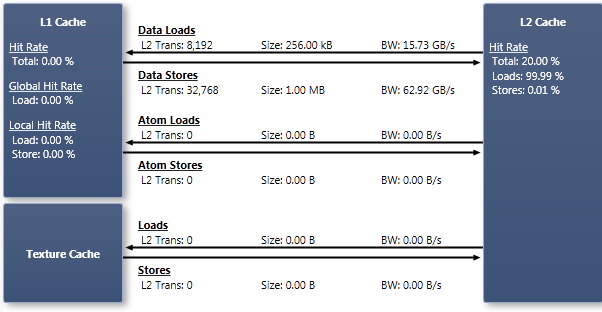

CUDA 设备的数据缓存层次结构在 Programming Guide 的各计算能力章节中均有描述，例如 2.x 与 3.x。一般而言，存在三类数据缓存：L1、L2 和纹理缓存。从缓存中加载数据是通过固定大小的事务完成的。L1 事务为 128 字节，L2 和纹理事务为 32 字节。优化内存使用的一项重要策略，是将加载和存储成组进行，以尽可能少的缓存事务访问所需的数据。对于同时被 L1 和 L2 缓存的内存，若一个 warp 中的每个线程都从分散位置加载一个 4 字节值，并且这些访问都在 L1 缓存中未命中，则每个线程都会产生一次 128 字节的 L1 事务以及四次 32 字节的 L2 事务。这将导致加载指令的重新发射次数比这些值相邻且按缓存对齐时多 32 倍。如果缓存之间的带宽成为瓶颈，可以通过重排数据或调整算法以更均匀地访问数据来缓解该问题。更多详情参见 Programming Guide 的全局内存章节。
图表
缓存全局内存访问要么经过 L1 和 L2 缓存，要么仅经过 L2 缓存，具体取决于架构和所使用的指令类型。全局只读内存访问经过纹理缓存和 L2 缓存。关于如何控制全局访问是否绕过 L1，请参见内存统计 — 全局内存实验。本地内存访问经过 L1 和 L2 缓存；关于本地内存访问的更多信息，请参见内存统计 — 本地内存实验。纹理内存是只读的设备内存，访问经过纹理缓存和 L2 缓存；关于纹理访问的详情，请参见内存统计 — 纹理内存实验。共享内存访问不经过任何缓存。 |
NVIDIA GameWorks Documentation Rev. 1.0.150630 ©2015. NVIDIA Corporation. All Rights Reserved.